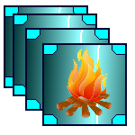

| Icon | Username | Description | Time | Hardcore |
 | charaquza | Reaching a total level of 900. | 241 days, 12:38:23 | |
| | agro speed5 | Reaching a total level of 30. | 0 days, 00:28:41 | |
 | flipflop | Reaching a mining level of 100. | 44 days, 07:51:11 | |
 | flipflop | Reaching a crafting level of 100. | 21 days, 18:37:04 | |
 | 2423gg | Reaching a woodcutting level of 100. | 140 days, 12:01:12 | |
 | flipflop | Reaching a farming level of 100. | 41 days, 06:31:06 | |
 | xinaiz | Reaching a brewing level of 100. | 163 days, 22:21:21 | |
 | nail3n | Reaching a combat level of 100. | 223 days, 17:02:06 | |
 | sven | Reaching a magic level of 100. | 165 days, 11:38:34 | |
 | xinaiz | Reaching a fishing level of 100. | 139 days, 19:00:30 | |
 | flipflop | Reaching a cooking level of 100. | 35 days, 13:54:14 | |
| | elemenopee7 | Completing the robot waves. | 293 days, 21:47:29 | |
| | berghain | Completing one elite achievement set. | 113 days, 04:47:38 | |
|  | eezymode | Completing all elite achievement sets. | 359 days, 02:17:30 | |
| | daichi38 | Crafting a dragon sword. | 200 days, 10:41:04 | |
| | sabaka | Wielding a dragon sword. | 151 days, 12:47:14 | |
| | eghc | Reaching a total level of 900. | 266 days, 16:38:01 |  |
| | kilobug42 | Reaching a mining level of 100. | 254 days, 03:08:47 | |
| | tarcat | Reaching a crafting level of 100. | 254 days, 17:40:22 | |
| | alqira | Reaching a woodcutting level of 100. | 118 days, 01:43:30 | |
| | tarcat | Reaching a farming level of 100. | 239 days, 05:39:04 | |
| | fifiririloul | Reaching a brewing level of 100. | 349 days, 19:44:22 | |
| | kilobug42 | Reaching a combat level of 100. | 269 days, 17:54:32 | |
| | eghc | Reaching a magic level of 100. | 266 days, 16:38:01 | |
| | binaryhc | Reaching a fishing level of 100. | 311 days, 20:05:11 | |
| | kilobug42 | Reaching a cooking level of 100. | 271 days, 18:23:08 | |
| | ridaren | Completing the robot waves. | 754 days, 09:20:42 | |
| | eghc | Completing one elite achievement set. | 263 days, 16:22:06 | |
| | vireo | Completing all elite achievement sets. | 670 days, 07:08:33 | |
| | bitsbytehard | Crafting a dragon sword. | 428 days, 19:54:58 | |
| | bitsbytehard | Wielding a dragon sword. | 428 days, 19:55:58 | |